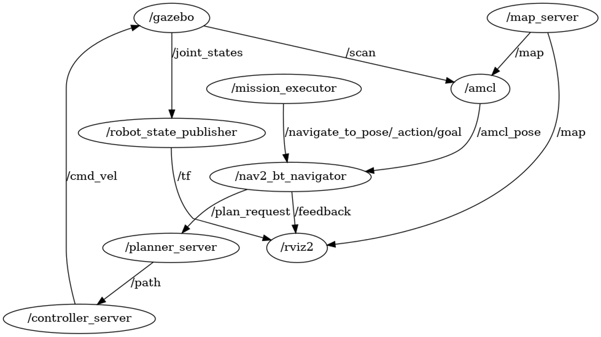
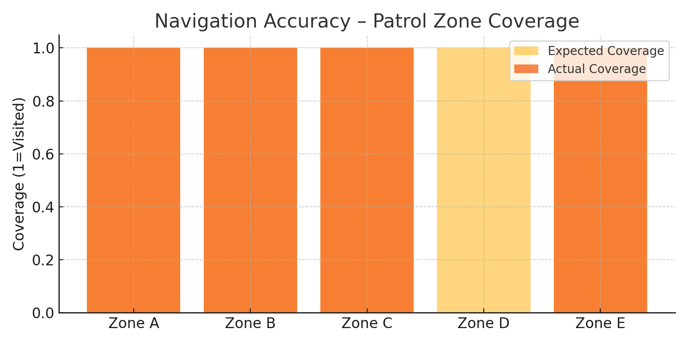
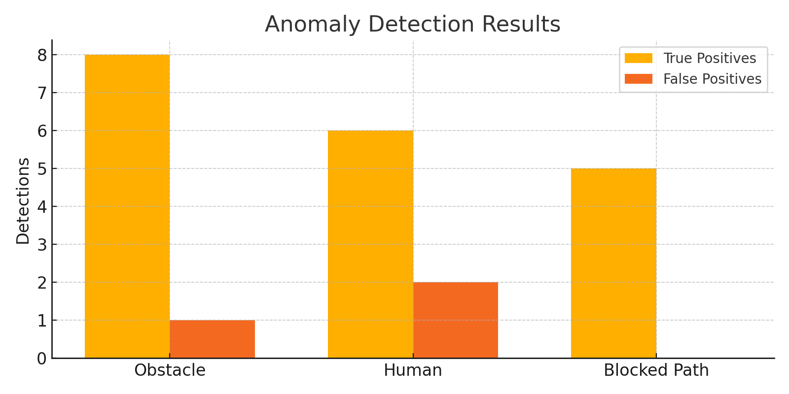
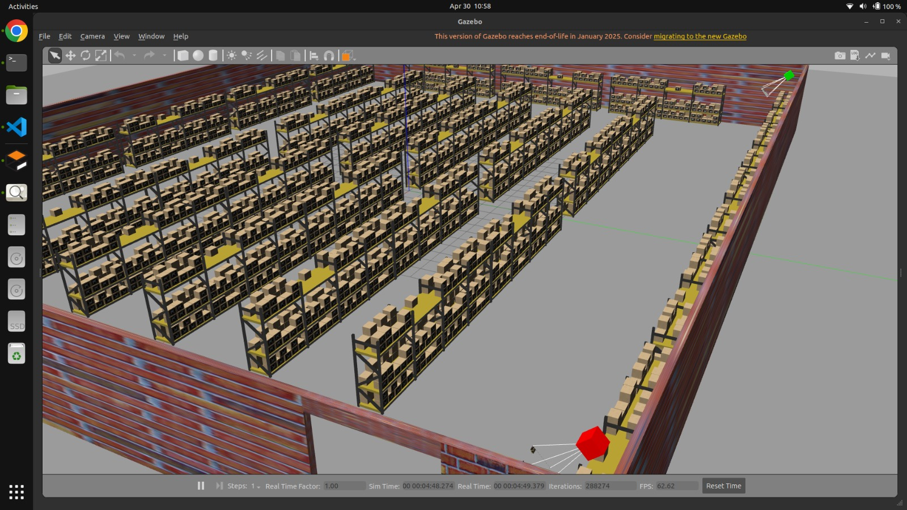
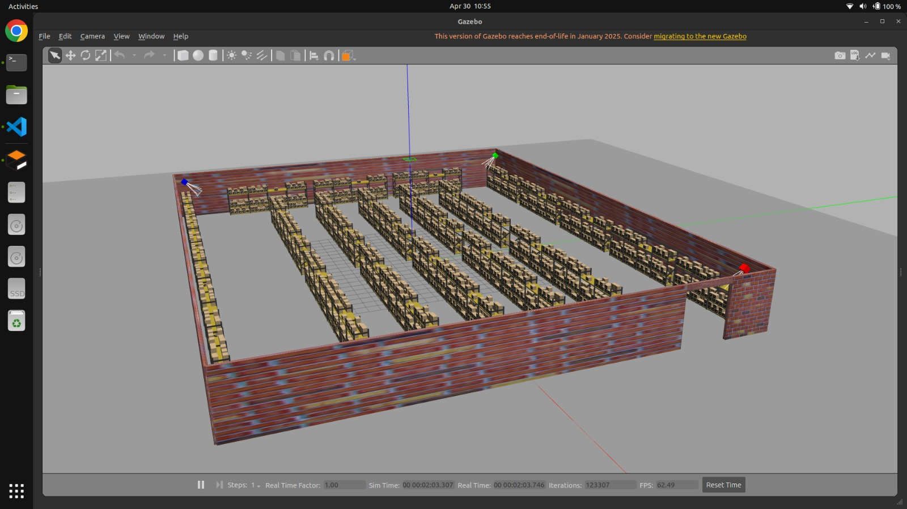
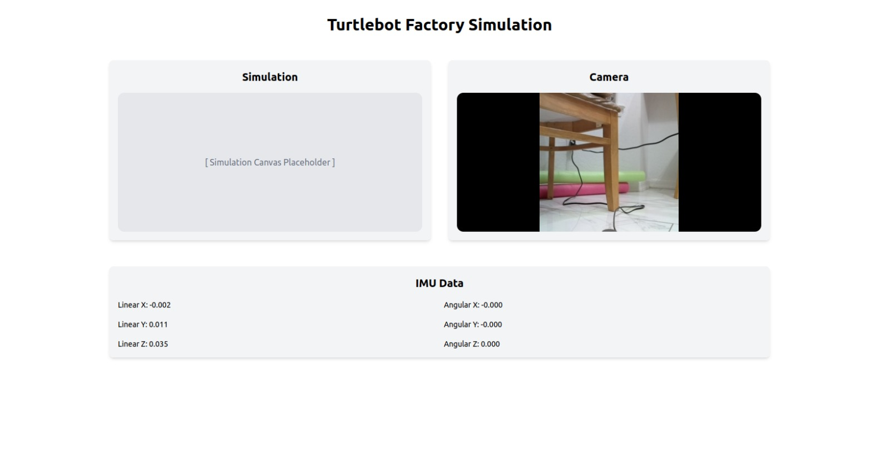

Project Outputs: Autonomous Warehouse Patrolling Robot¶
This page consolidates the key visual results and architectural outputs from the warehouse_simulation-main project developed by Team 08.
Final ROS2 Architecture Diagram¶
A simulated rqt_graph-style layout based on all nodes, topics, and services active during robot navigation.

rqt_graph Snapshot¶
This diagram simulates a snapshot of the live ROS2 communication graph generated using rqt_graph.

Navigation Accuracy – Patrol Zone Coverage Graph¶
Shows how many patrol zones were successfully visited compared to the expected mission plan.

Anomaly Detection¶
Illustrates the detection performance across different anomaly types using simulated ground truth.

Demonstration Videos¶
Autonomous Patrol in Action¶
Elevator Pitch¶
Simulation Screenshots¶




Web-Application Screenshot¶

Summary¶
These outputs validate the core goals of our project: - Real-time autonomous patrolling in a simulated warehouse - Multi-layered ROS2 control stack with Nav2 - Visualized SLAM, anomaly detection, and path planning